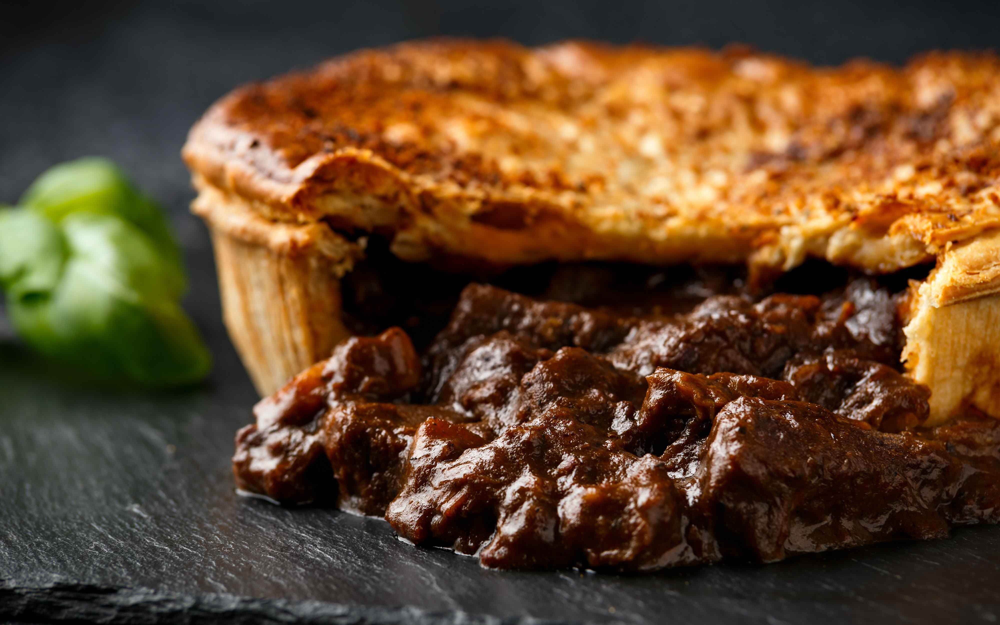

Steak and Ale Pie

Description
Steak and ale pie, a quintessential British comfort dish, is a culinary masterpiece that combines succulent cuts of beef steak with a robust ale-infused gravy, encased in a golden and flaky pastry shell.
This hearty and flavorsome pie boasts a rich filling, where tender chunks of beef mingle with caramelized onions, earthy mushrooms, and occasionally root vegetables, creating a harmonious blend of textures and tastes.
The ale not only enhances the depth of flavor but also imparts a savory note to the velvety gravy that envelops the meat. The golden-brown pastry shell adds a delightful crunch to each bite, completing this classic dish that has become a beloved symbol of British gastronomy, embodying warmth, tradition, and culinary excellence.
Ingredients
For the Filling:
- 900g beef streak, diced into bite-sized pieces
- 2 tbsp vegetable oil
- 1 large onion, finely chopped
- 2 carrots, peeled and diced
- 2 cloves garlic, minced
- 225g mushrooms, sliced
- 1/4 cup all-purpose flour
- 360ml ale or beer
- 360ml beef broth
- 2 tbsp tomato paste
- 1 tbsp Worcestershire sauce
- Salt and black pepper to taste
- Fresh thyme or rosemary
For the Pastry:
- 2 sheets of ready-rolled puff pasty or shortcrust pastry
- 1 egg, beaten (for egg wash)
Instructions
Prepare the Filling:
- In a large, heavy-bottomed pot, heat the vegetable oil over medium-high heat. Add the diced beef and brown on all sides. Remove the beef and set it aside.
- In the same pot, add chopped onions, carrots, garlic, and mushrooms. Sauté until the vegetables are softened.
- Sprinkle the flour over the vegetables and stir well to coat.
- Pour in the ale, beef broth, tomato paste, and Worcestershire sauce. Stir to combine.
- Add the browned beef back to the pot. Season with salt and pepper. If using, add fresh thyme or rosemary for added flavor.
- Simmer the mixture for about 1.5 to 2 hours or until the beef is tender and the sauce has thickened.
Prepare the Pastry:
- Preheat the oven to the temperature specified on the pastry package.
- Roll out the pastry sheets to fit the top and sides of your pie dish.
Assemble and Bake
- Line the pie dish with your rolled-out pastry
- Pour the steak and ale filling into a pie dish.
- Cover the filling with the rolled-out pastry, pressing the edges to seal. Cut a small slit in the center to allow steam to escape.
- Brush the pastry with beaten egg for a golden finish.
- Bake in the preheated oven according to the pastry instructions or until the crust is golden brown and cooked through.
Serve:
- Allow the pie to rest for a few minutes before serving. Serve hot, and enjoy your delicious homemade Steak and Ale Pie!